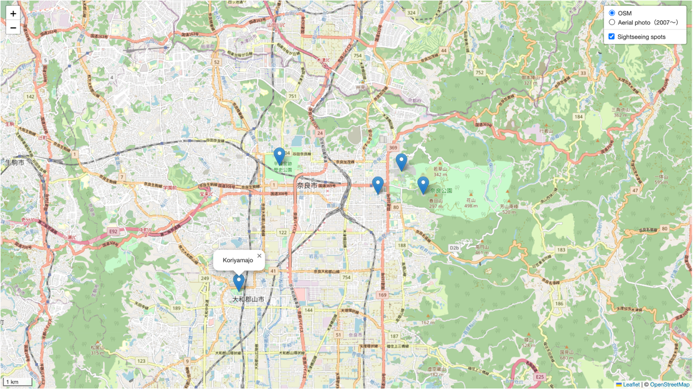

Leaflet入門
ここでは、WEB地図の作成入門として、Leafletの利用方法について演習形式で解説します。内容は、Leaflet web siteを参考に作成しています。
Menu
- Leafletについて
- 今日の学習成果について
- イントロ
- APIの利用
- WEB地図の保存
- レイヤの実装
- ポイントデータの作成
- スケールの追加
- 課題
Leafletについて
Leafletは、WEB地図の作成のためのオープンソースJavaScriptライブラリです。シンプルなコーディングで容易に、モバイルやデスクトップの表示に対応したWEB地図が作成できます。全体のファイルサイズが軽いことや様々な地図表現（マーカやタイル読み込み）ができることが特徴です。Leafletに関する詳しい解説は、以下のリンクを参照してください。
学習の完成例
学習をはじめる前に この実習で作成する地図の全体像. をみてみましょう。
<html>
<head>
<title>webmap</title>
<link rel="stylesheet" href="https://unpkg.com/leaflet@1.9.4/dist/leaflet.css" integrity="sha256-p4NxAoJBhIIN+hmNHrzRCf9tD/miZyoHS5obTRR9BMY=" crossorigin="" />
<script src="https://unpkg.com/leaflet@1.9.4/dist/leaflet.js" integrity="sha256-20nQCchB9co0qIjJZRGuk2/Z9VM+kNiyxNV1lvTlZBo=" crossorigin=""></script>
</head>
<body>
<div id="map" style="height: 100%; width: 100%;"></div>
<script>
const basemap = L.tileLayer('https://tile.openstreetmap.org/{z}/{x}/{y}.png', {
maxZoom: 19,
attribution: '© <a href="http://www.openstreetmap.org/copyright">OpenStreetMap</a>'
})
const addmap1 = L.tileLayer('https://cyberjapandata.gsi.go.jp/xyz/ort/{z}/{x}/{y}.jpg', {
maxZoom: 18,
attribution: "<a href='https://maps.gsi.go.jp/development/ichiran.html' target='_blank'>GSI maps</a>"
});
var markers = L.layerGroup();
L.marker([34.9849,135.7586]).bindPopup('Kyoto station').addTo(markers),
L.marker([35.0138,135.7516]).bindPopup('Nijoujo').addTo(markers),
L.marker([35.03949,135.72955]).bindPopup('Kinkakuji').addTo(markers),
L.marker([35.0303,135.7349]).bindPopup('Kitanotenmangu').addTo(markers);
const webmap = L.map('map',{
center:[34.9849,135.7586],
zoom:12,
layers:[basemap,markers]
});
const maps = {
"OSM":basemap,
"Aerial photo（2007～）":addmap1
};
const spots = {
"Sightseeing spots": markers,
};
L.control.layers(maps,spots).addTo(webmap);
L.control.scale({imperial: false}).addTo(webmap);
</script>
</body>
</html>
イントロ
ここでは、Hosted VersionのLeafletを使用していきます。 まずは、デスクトップにwebmapというフォルダを作ります。次に、メモ帳などのテキストエディタに以下のコードをコピペします。最後にテキストファイルをwebmap.htmlという名前でwebmapのフォルダに保存します。
<!DOCTYPE html>
<html>
<head>
<title>webmap</title>
</head>
<body>
<script>
</script>
</body>
</html>
Leaflet APIの利用
Leafletにアクセスし、Using a Hosted Version of Leafletにあるコードをコピーします。

次にwebmap.htmlをテキストエディタでひらき、<head> タグ内に先ほどのコードをコピペします。
<head>
<title>webmap</title>
<link rel="stylesheet" href="https://unpkg.com/leaflet@1.9.4/dist/leaflet.css" integrity="sha256-p4NxAoJBhIIN+hmNHrzRCf9tD/miZyoHS5obTRR9BMY=" crossorigin="" />
<script src="https://unpkg.com/leaflet@1.9.4/dist/leaflet.js" integrity="sha256-20nQCchB9co0qIjJZRGuk2/Z9VM+kNiyxNV1lvTlZBo=" crossorigin=""></script>
</head>
<body>にタグ内に <div id="map" style="height: 100%; width: 100%;"></div> を追加します。 その下に<script>タグを追加します。
<body>
<div id="map" style="height: 100%; width: 100%;"></div>
<script>
</script>
</body>
背景地図の設定
<body>の<script> を以下のように記述します。setView([xxxx,xxxxx], 13)の箇所には、中央に表示したい場所の座標、初期表示のズームレベルを記載します。ここでは、デフォルトの地図画像としてL.tileLayerを使って、OpenStreetMap (OSM)を読み込みます。
const basemap = L.tileLayer('https://tile.openstreetmap.org/{z}/{x}/{y}.png', {
maxZoom: 19,
attribution: '© <a href="http://www.openstreetmap.org/copyright">OpenStreetMap</a>'
})
const webmap = L.map('map',{
center:[34.9849,135.7586],
zoom:12,
layers:[basemap]
});
保存と地図表示
テキストの追加が完了したら、まずはここで上書き保存します。Webブラウザで、htmlファイルを開いてみると以下のような地図が表示されます。以下の//Grouping tile layersと// Setting layer selecting boxでは、チェックをつけた地図を切り替えて表示できるようにします。

複数の背景地図の設定
ここからは、複数の背景地図を追加して、地図上で切り替えられるようにします。まずは、地理院タイルの写真のタイルを読み込んでみましょう。
const basemap = L.tileLayer('https://tile.openstreetmap.org/{z}/{x}/{y}.png', {
maxZoom: 19,
attribution: '© <a href="http://www.openstreetmap.org/copyright">OpenStreetMap</a>'
})
const addmap1 = L.tileLayer('https://cyberjapandata.gsi.go.jp/xyz/ort/{z}/{x}/{y}.jpg', {
maxZoom: 18,
attribution: "<a href='https://maps.gsi.go.jp/development/ichiran.html' target='_blank'>GSI maps</a>"
});
const webmap = L.map('map',{
center:[34.9849,135.7586],
zoom:14,
layers:[basemap] //A layer is displayed when the map is opened.
});
//Grouping tile layers
const maps = {
"OSM":basemap,
"Aerial photo（2007～）":addmap1
};
// Setting layer selecting box
L.control.layers(maps).addTo(webmap);
ポイントデータの作成
ここでは、Point,データを作成していきます。
OSMから緯度経度を取得する
OpenStreetMap (OSM) を開いて、任意の場所で右クリックするとShow addressからその場所の緯度経度を知ることができます。

下記のように記載すると、ポイントデータが記載できます。
L.marker([34.9850, 135.7588]) は、ポイントデータの座標を記載します. The bindPopup では、ポップアップを指定できます。
L.marker([34.9850,135.7588]).bindPopup('Kyoto station').addTo(webmap);
レイヤのグループ化と実装
ここでは作成したポイントデータをグルーピングして、レイヤとして表示していきます。京都駅に加え、二条城、金閣寺、北野天満宮の位置を加え、観光スポットとして地図で閲覧できるようにします。ポイントをクリックすると記載したポップアップが表示されます。
var markers = L.layerGroup();
L.marker([34.9849,135.7586]).bindPopup('Kyoto station').addTo(markers),
L.marker([35.0138,135.7516]).bindPopup('Nijoujo').addTo(markers),
L.marker([35.03949,135.72955]).bindPopup('Kinkakuji').addTo(markers),
L.marker([35.0303,135.7349]).bindPopup('Kitanotenmangu').addTo(markers);
const webmap = L.map('map',{
center:[34.9849,135.7586],
zoom:12,
layers:[basemap,markers] // Layers are displayed when the map is opened.
});
// Listing tile layers for displaying in the layer selection box.
const maps = {
"OSM":basemap,
"Aerial photo（2007～）":addmap1
};
// Listing vector layers for displaying in the layer selection box.
const spots = {
"Sightseeing spots": markers,
};
// Adding features to the layer selecting box.
L.control.layers(maps,spots).addTo(webmap);
スケールの追加
<script>の最後に、以下を記述することで、スケールが追加できる。
L.control.scale({imperial: false}).addTo(webmap);
最終的に作成したものを上書き保存して、ブラウザで開くと、完成例と同じものが表示される。
課題
京都市内をテーマに何かのおすすめマップを作成してください。地図は、2枚以上のWeb地図が切り替えられ、５地点以上のポイントが含まれていること。
完成例（奈良）
